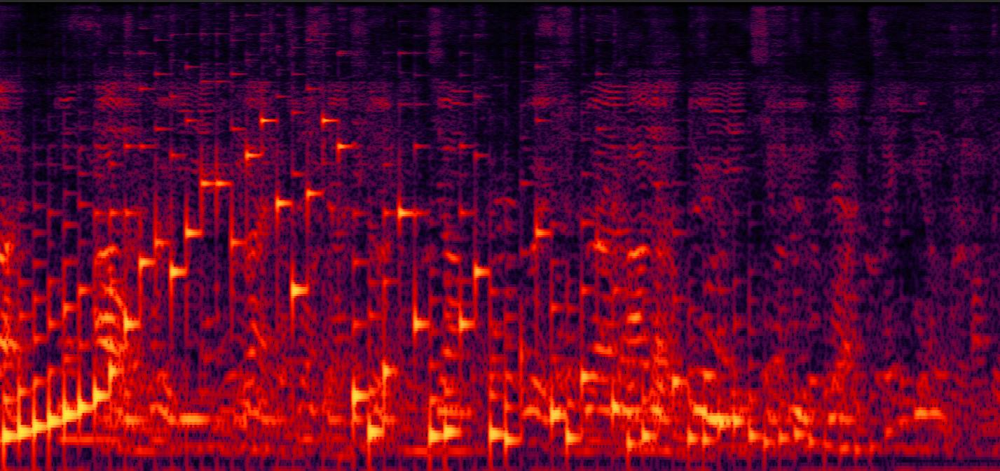
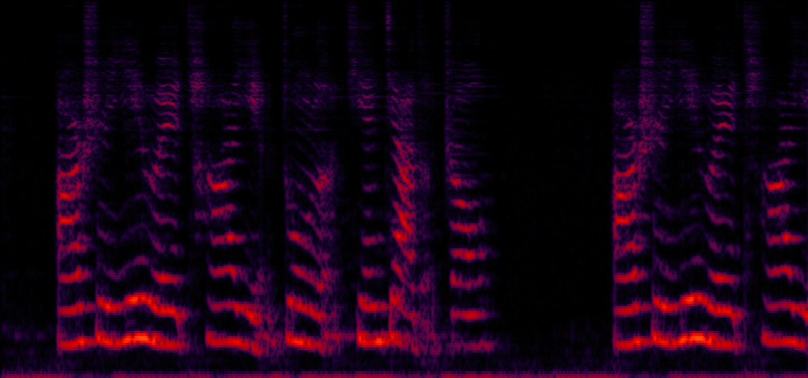

Separated speech samples by the proposed DPCRN
Sample1 with only one speaker talking in zone 6 -- Easy done😊

Mono mixture from 6-ch signals obtained by fixed beamforming from 24-ch distributed mic-array recording

Seperated speech in zone 1

Seperated speech in zone 2

Seperated speech in zone 3
Seperated speech in zone 4

Seperated speech in zone 5

Seperated speech in zone 6